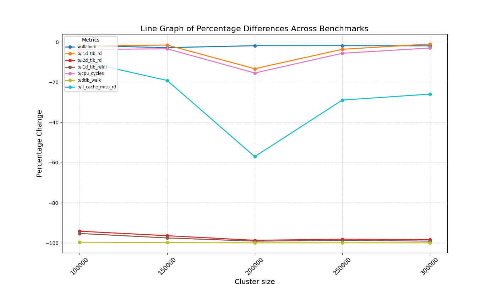

Table of Contents
1. Evaluation
We conducted tests of the FAT Pointer-based range addresses against Jemalloc, the default memory allocator for CHERIBSD(, ), to assess the performance improvements enabled by a CHERI-based huge page-aware allocator. Specifically, we evaluated the reduction in TLB misses and its impact on overall performance metrics, such as wall clock runtime.
To comprehensively analyze the proposed allocator, we categorized benchmarks into two classes which are micro and macro benchmarks. Micro benchmarks comprise smaller C programs designed to target specific allocator patterns, enabling us to evaluate detailed aspects of the allocator's behavior. Macro benchmarks, on the other hand, encompass larger, real-world C programs, allowing us to assess the allocator's performance in more practical, real-world scenarios.
The experiment setup details the software stack used for evaluation. It includes the specific configurations, compiler options, and system environment tailored to benchmark the proposed allocator. This ensures consistency and repeatability in our results, providing a solid foundation for meaningful comparisons.
We further elaborated on the two classes of benchmarks executed. Micro benchmarks focused on particular allocation and deallocation patterns, such as sequential and random memory accesses, to stress-test the allocator under controlled conditions. Macro benchmarks involved real-world applications, offering insights into how the allocator performs with complex memory allocation demands, large datasets, and varying execution contexts.
The results section presents the outcomes of our benchmarks, highlighting key metrics such as TLB miss rates, memory usage, and runtime performance. We observed that the proposed allocator demonstrated significant improvements in reducing TLB misses, leading to noticeable enhancements in runtime efficiency for both micro and macro benchmarks. The behavior of specific allocation patterns and their impact on memory performance is detailed, providing a nuanced understanding of the allocator's effectiveness.
Based on the evaluated results, the usability of the proposed allocator shows promise for applications requiring optimized memory management and reduced overhead from TLB misses. However, limitations were also identified, such as scenarios where the allocator's performance gains were marginal or where it introduced additional complexity in memory management. These limitations provide a roadmap for future optimizations and refinements of the allocator design.
1.1. Expirement setup
The CHERI Morello board was used to evaluate the proposed memory allocator. Morello implements the ARM A76 with enhanced server-class memory, featuring a quad-core ARM CPU with capability extensions. The L1 and L2 caches were modified to proliferate the capability bit, ensuring compatibility with CHERI's capability-based memory model. When compiling the C programs for benchmarking, the Benchmark ABI was used as recommended by the CHERI community. This compilation mode was enabled using the Clang compiler.
The Benchmark ABI was specifically designed because the Morello branch predictor was not expanded to predict bounds. Consequently, a capability-based jump introduces stalls in later PCC-dependent instructions until bounds are established. This issue is particularly significant during dynamically linked calls and returns between libraries, where bounds are changed to cover the called or returned-to library. Such stalls can negatively affect performance, making the Benchmark ABI an essential consideration for this evaluation.
Each C program was executed using two different memory allocators. The first was the modified C allocator, imported as a header file. This approach was necessary because the Benchmark ABI shared object file exhibited unexpected behavior, failing to overwrite the C program at runtime with the intended malloc functions. The second allocator was the standard OS memory allocator, which, in the case of CHERIBSD, is Jemalloc.
Performance measurements were carried out using ARM performance counters to ensure accurate evaluation. These counters provided detailed metrics, allowing us to compare the performance of the two allocators and assess the impact of the proposed changes.
1.1.1. Performance counters used
| Performance counter | Description |
|
Wall clock (p/l1d_tlb_rd) L1 data TLB reads (p/l2d_tlb_rd) L2 data TLB reads (p/l1d_tlb_refill) L1 data TLB refills (p/cpu_cycles) CPU cycles (p/dtlb_walk) Data TLB walks (p/ll_cache_miss_rd) Last level cache miss reads |
The actual time taken from the start of a computer program to the end. Level 1 data TLB access, read Level 2 data TLB access, read Level 1 data TLB refill. The Level 1 data TLB refill counter tracks each access to the L1D_TLB that results in a refill of the Level 1 data or unified TLB. This includes any access that requires a memory lookup due to a translation table walk or accessing another level of TLB cache. The CPU CYCLES counter increases with every clock cycle. However, it can be affected by changes in clock frequency, such as when WFI (Wait for Interrupt) or WFE (Wait for Event) instructions pause the clock. Data TLB access with at least one translation table walk. Last level cache miss, read (This refers to every miss in the Last level cache that occurs during a memory read operation.) |
1.1.2. Benchmarks
The benchmarks are classified into 2 classes:
- Micro benchmark
- GLIBC: The Glibc benchmark evaluates the performance of malloc and free functions in single-threaded, multi-threaded, and emulated multi-threading scenarios using various block sizes and allocation patterns. It simulates real-world memory usage by partially deallocating blocks in FIFO order and fully deallocating them in LIFO order. Results are gathered across configurations to analyze performance variations.
- MemAccess: This benchmark by Alex Bordei evaluates the performance impact of memory access patterns by constructing and traversing a doubly linked list with varying working set sizes. It supports sequential or randomized structures, optional node operations, and multithreaded traversal using pthreads. The program dynamically allocates memory and systematically doubles the working set size to analyze memory hierarchy behavior.
- Macro runs
- Kmeans: Kmeans implements a parallelized K-means clustering algorithm that assigns data points to clusters based on proximity to centroids, iteratively updating them until convergence. The computation is distributed across threads using the pthread library, dynamically assigning tasks to optimize performance. Parameters like data size and clusters are configurable, and the program ensures efficient memory management and synchronization.
- Richards: Richards is a task scheduling benchmark that simulates a multitasking environment with tasks of varying types and priorities, communicating through queued packets. The schedule function manages task execution based on state and priority, tracking processed packets and held tasks for performance evaluation. Configurable iterations and timing help measure system performance and ensure correctness.
1.2. Results
